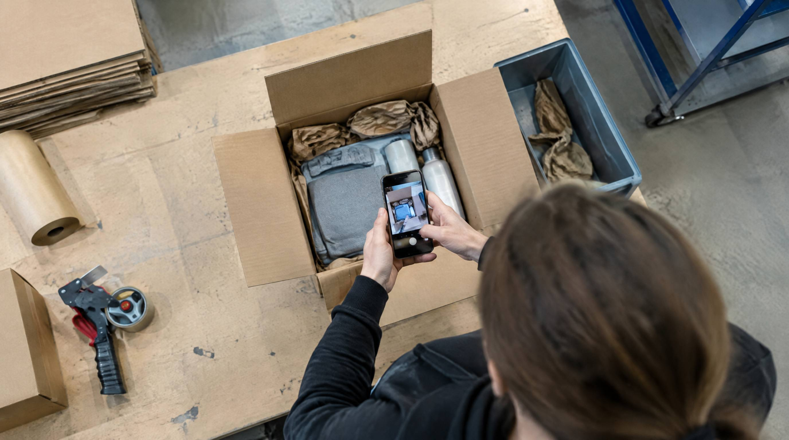

I 2007 drev vi selv webshop. Vi bad kunderne klippe ledningen over og sende et billede, i stedet for at sende varen retur. Det var billigere for alle. Indtil det ikke var.
En kunde købte en barbermaskine. Den kom frem, og dagen efter kom mailen: den virkede ikke. Vi oprettede reklamationen, fik den godkendt hos producenten, og bad som altid om et billede af den overklippede ledning.
Billedet kom. Ledningen var klippet over, men det var sket i Photoshop, og det var ikke pænt gjort. Vi ringede til kunden og sagde at sagen var udtaget til stikprøve, så vi desværre måtte have varen hjem.
Maskinen kom retur og så splinterny ud. Så lagde vi den ned på bordet, og den dryssede med skægstubbe. Nogen havde flyttet det brugte indmad over i en ny skal. Ledningen lå med i kassen, klippet over et helt andet sted end på billedet.
Det mærkeligste var kundens reaktion. Han blev mest sur over, at vi havde fået ham til at klippe ledningen over på et produkt der virkede.
👉 Kan I dokumentere hvad der lå i kassen da den blev sendt? Lad os kigge på jeres flow
Det nye er ikke snyden. Det er hvor let den er blevet
Den historie er fra før AI, før smartphones og før de fleste af de værktøjer vi tager for givet i dag. Den krævede en person der kunne finde ud af Photoshop, og som gad bruge en aften på det.
I september 2026 fortalte legetøjsbutikken Legeakademiet, at de havde fået deres første AI-genererede reklamation. Medstifter Ann Riemer syntes billedet af det ødelagte produkt lugtede forkert, og et analyseprogram gav 98 procents sandsynlighed for at det var lavet af en maskine. De bad om at få varen retur. Det ville kunden ikke, og reklamationen blev annulleret.
Dansk Erhvervs undersøgelse samme år viser at hver tredje danske netbutik har været ramt af svindel. Af dem svarer 13 procent, at nogen har brugt AI-genererede billeder som dokumentation for at få pengene tilbage. Hver fjerde har oplevet at en returnering indeholdt de forkerte varer.
Kilde: Dansk Erhverv, 14. september 2026, "Ny form for svindel har ramt Legeakademiet", og Dansk Erhvervs årlige undersøgelse af svindel mod netbutikker.
Bevisbyrden er din, ikke kundens
Det er den del de fleste ikke har tænkt igennem.
Siger en kunde at pakken aldrig kom frem, er det dig der skal bevise at den gjorde. Siger kunden at der lå noget forkert i den, er det dig der skal bevise at der lå det rigtige. Sådan er forbrugerreglerne, uanset hvor urimeligt det føles i den enkelte sag.
Det betyder at spørgsmålet ikke er om du kan gennemskue kundens billede. Det er om du selv har noget at lægge på bordet.
Kilde: Dansk Erhverv, 15. juni 2026, "Hvem har ansvaret, hvis din pakke ikke kommer frem eller indeholder forkerte varer?"
Det der duer som bevis
- Leveringsbevis fra transportøren. Kvittering eller foto af pakken på adressen. Det er det eneste der afgør spørgsmålet om pakken kom frem.
- Scanning af hver vare i plukket. Hvis systemet ikke lader ordren lukke før varerne er scannet, findes der en liste over præcis hvad der gik i kassen, med tidspunkt og medarbejder.
- Vægt ved afsendelse. Den er stærkere end de fleste tror. En pakke der skulle indeholde tre ting og vejer som to, er svær at bortforklare. Og en pakke der vejer rigtigt, lukker diskussionen.
- Optagelse af pakningen. Nogle webshops filmer pakkebordet. Det er tungt at bruge i praksis, men det virker, og det er en reel mulighed hvis varerne er dyre nok.
Bemærk at tre af de fire er noget du har i forvejen, hvis lageret kører på scanning. Du skal bare kunne finde dem frem, mens sagen er i gang.
Hvornår kan det betale sig at få varen hjem?
Det her er en regnestue, ikke et principspørgsmål.
Under omkring 300 kr. i ordreværdi kan det sjældent betale sig at hente varen hjem. Returfragt, modtagelse, kontrol og den tid sagen tager overstiger varens værdi. Lad kunden beholde den, send en ny, og afskriv den første.
Over det beløb, og især hvis noget skurrer, skal varen hjem. Det er ikke fordi du tror kunden lyver. Det er fordi du ikke kan vide det, og fordi beslutningen skal kunne forsvares over for den næste kunde der spørger om det samme.
Læg mærke til hvad der skete hos Legeakademiet: de bad om varen, og så forsvandt sagen af sig selv. Anmodningen er i sig selv et filter.
Hvad du gør, når noget ikke stemmer
- Bed om varen retur. Sig det neutralt. En stikprøve er en stikprøve, ikke en anklage, og den der har en ægte sag har ingen grund til at sige nej.
- Find dit eget bevis frem først. Hvad blev der scannet, hvad vejede pakken, hvad siger transportøren. Tit er sagen afgjort der.
- Bed om en tro- og loveerklæring hvis kunden fastholder sin forklaring. Mange sager stopper i det øjeblik der skal skrives under.
- Meld det til politiet eller et klagenævn i de grove tilfælde. Og sig til kunden, inden da, at det er strafbart at snyde med dokumentation.
Den pris ingen fører regnskab med
Ann Riemer sagde det bedre end vi kan: "Det koster tid og ressourcer og giver også et knæk i den tillid, der er mellem os og kunderne."
Det er den egentlige omkostning. Ikke den ene barbermaskine eller det ene stykke legetøj, men at man begynder at kigge skævt til alle de andre. De fleste reklamationer er ægte. Bygger du en proces der behandler alle som mistænkte, betaler du for de få med utilfredshed fra de mange.
Det der virker er det modsatte: en let proces for alle, og et solidt bevisgrundlag der kun trækkes frem når noget ikke stemmer.
Sådan hjælper SmartPack
Du kan ikke afgøre om en kundes billede er ægte. Du kan sørge for at du ikke har brug for det.
- Plukket kan ikke afsluttes uden at varen er scannet, så der findes en liste over hvad der reelt gik i kassen
- Hver handling har tidspunkt og medarbejder på sig
- Vægten fra pakkebordet kan følge med forsendelsen
- Returmodtagelsen registrerer varens stand, så et mønster kan ses på tværs af sager
Det løser ikke svindel. Det flytter bare bevisbyrden tilbage til det sted hvor du kan løfte den.
Ofte stillede spørgsmål
Hvem skal bevise at pakken kom frem?
Det skal du som webshop. Beviset er typisk kundens kvittering for modtagelsen eller transportørens foto af pakken på adressen. Uden et af de to står du svagt, uanset hvad du selv mener om sagen.
Kan jeg kræve at kunden sender varen retur ved en reklamation?
Ja, du må gerne bede om at få varen til undersøgelse. Det er også det mest effektive filter der findes: den der har en ægte sag siger ja, og en del af de øvrige sager falder væk af sig selv.
Hvordan ser jeg om et billede er lavet med AI?
Der findes programmer der giver et bud med en sandsynlighed, og de kan bruges når du er i tvivl. Men de bliver dårligere jo bedre generatorerne bliver, så byg ikke processen på dem. Byg den på din egen dokumentation.
Hvor meget svindel taler vi om?
Hver tredje danske netbutik har oplevet svindel, og 13 procent af dem er mødt af AI-genererede billeder som dokumentation. Hver fjerde har fået en returnering med de forkerte varer i. Tallene er fra Dansk Erhvervs undersøgelse i 2026, og der er formentlig et mørketal, fordi en del aldrig bliver opdaget.
Skal vi holde op med at lade kunder beholde eller destruere varen?
Nej. På billige varer er det stadig den billigste måde, og den giver den bedste oplevelse. Sæt en beløbsgrænse, hold fast i den, og bed om varen når sagen ligger over grænsen eller når noget ikke stemmer.